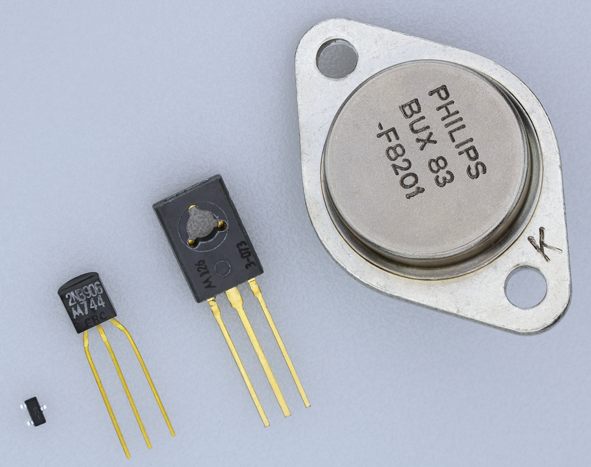
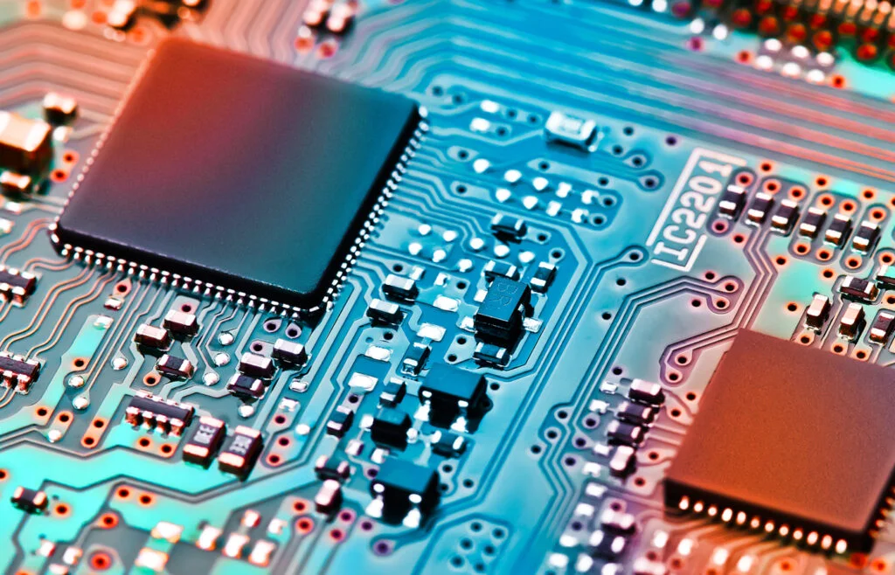
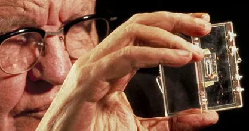
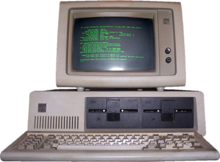
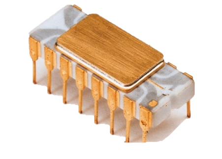
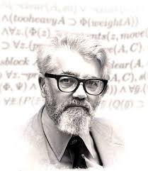

Generaciones de Ordenadores💻
Primera generación: tubos de vacío (1940-1956)🧪
Los primeros sistemas informáticos usaban tubos de vacío para los circuitos y tambores magnéticos para la memoria, estos equipos a menudo eran enormes, ocupando salas enteras. Además eran muy costosos de operar además de utilizar una gran cantidad de electricidad, los primeros ordenadores generaban mucho calor, que a menudo era la causa de un mal funcionamiento.
Los ordenadores de primera generación se basaban en el lenguaje de máquina, el lenguaje de programación de nivel más bajo, para realizar operaciones, y solo podían resolver un problema a la vez. A los operadores les tomaría días o incluso semanas establecer un nuevo problema. La entrada de los datos se basó en tarjetas perforadas y cintas de papel, y la salida se mostró en las impresiones.

El matemático húngaro-estadounidense John von Neumann posando junto a la computadora EDVAC del Instituto de Estudios Avanzados de Princeton en 1952
El ENIAC fue la primera computadora electrónica a gran escala construida en los Estados Unidos y se utilizó principalmente para cálculos balísticos durante la Segunda Guerra Mundial. Fue completado en 1945 y pesaba alrededor de 30 toneladas.
UNIVAC, por otro lado, fue la primera computadora producida comercialmente por americanos. Completada en 1951, fue una maquina muy costosa en su momento, ascendiendo al millón de dólares para su fabricación. Se utilizó para una amplia variedad de aplicaciones, incluyendo cálculos científicos, procesamiento de datos y aplicaciones de caracter militar. Sin embargo, Se destaco por haber procesado y analizado los resultados de los comicios presidenciales de 1952 en los Estados Unidos. Prediciendo con precisión el resultado.
*EDVAC & ENIAC & UNIVAC son ejemplos de ordenadores de I Generación*
Segunda generación: transistores (1956-1963)⚡ ⎇

La segunda generación de computadoras abarca entre 1956 y 1963, y se produjo tras la sustitución de las válvulas de vacío por transistores. Este cambio permitió fabricar aparatos mucho más pequeños y de mucho menor consumo eléctrico.
Aunque seguían utilizándose las tarjetas perforadas, estas fueron las primeras computadoras que dispusieron de un lenguaje específico para programarlas, conocido como “lenguaje ensamblador”. En él, se daba una representación simbólica al lenguaje de máquina de la generación anterior, pero no llegaba a ser un lenguaje de alto nivel. Entre los más conocidos, estuvo el lenguaje Fortran, desarrollado por IBM en 1957.
Tercera Generación: Circuitos Integrados (1964-1971)🏿

La tercera generación de computadoras se extendió entre 1964 y 1971, y estuvo determinada por la invención de los circuitos integrados. Esta tecnología revolucionó el mundo de la informática, ya que permitió aumentar la capacidad de procesamiento, a la par que reducía significativamente sus costos de manufacturación y su tamaño.
Los circuitos integrados, en uso todavía, se imprimen en pastillas de silicio, valiéndose de pequeños transistores y, sobre todo, de semiconductores. Su invención significó un paso importante hacia la miniaturización no solo de computadoras, sino de radios, televisores y otros aparatos semejantes.

El 12 de septiembre de 1958 fue presentado el primer circuito integrado por Jack Kilby de Texas InstrumentsCuarta generación: microprocesadores (1971-presente)🔲
La cuarta generación de computadoras se ubica entre 1971 y 1982, época en que la integración de los componentes electrónicos permitió la invención del microprocesador. Este consiste en un circuito integrado que reúne todos los elementos fundamentales de la máquina y que se denomina “chip” o “microchip”.
Así fue como nacieron las computadoras personales o PC (del inglés Personal Computer), concepto que aún perdura. Las PC estaban destinadas al uso de cualquiera que dispusiera de un escritorio, y eran capaces de realizar operaciones de distinto tipo: cálculos laborales, investigación científica, juegos de video, etcétera.

IBM PC 5150 con teclado y monitor verde (5151), ejecutando MS-DOS 5.0
El primer microprocesador fue el Intel 4004, fabricado en 1971 para una calculadora electrónica. En esta generación se produjo una verdadera explosión de computadoras comerciales de muy diversas marcas, como IBM, Apple y muchas otras.

El 15 de noviembre de 1971 Intel anuncia el primer microprocesador comercial integrado en un solo chip, dando inicio a la era miniaturización de las computadorasQuinta generación: inteligencia artificial (presente y más allá) 🤖🌐
La quinta generación de ordenadores comenzó a principios de los años 80 y continúa hasta hoy, caracterizándose por el desarrollo y la implementación de la inteligencia artificial (IA) y el procesamiento paralelo. El objetivo principal fue crear máquinas capaces de razonar, aprender y tomar decisiones, imitando la cognición humana. Esto se logró mediante el uso de múltiples procesadores trabajando a la vez y avances tecnológicos como la integración a ultra gran escala (ULSI).
Esta generación introdujo las interfaces de lenguaje natural y los sistemas expertos, sentando las bases para tecnologías modernas como los asistentes de voz, los sistemas de recomendación y los coches autónomos. Aunque los ambicioso proyectos que dieron nombre a la generación no cumplieron todas sus metas iniciales, impulsó significativamente la investigación en IA y computación avanzada que define la era actual de la informática.
¿Sabías que?
El primer modelo de neuronas artificiales fue planteado en 1943 por el neurocientífico Warren McCulloch y el lógico matemático Walter Pitts
El término <"inteligencia artificial"> (IA) fue acuñado por John McCarthy en 1956 durante la Conferencia de Dartmouth
